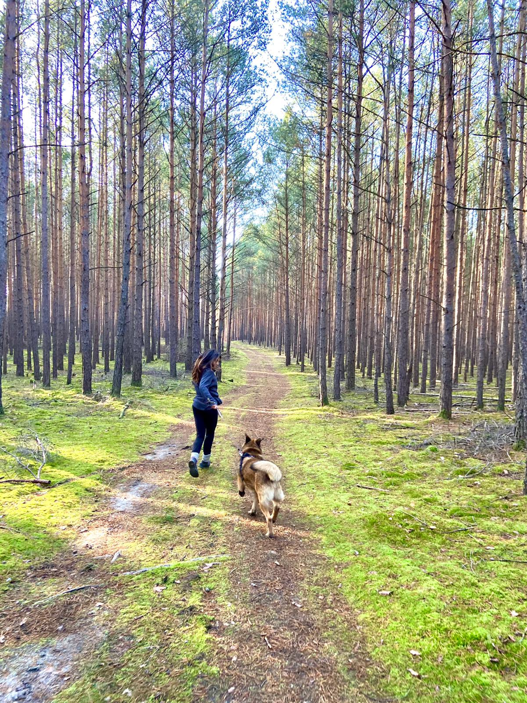

<div class="sobre-mi-container">
    <!-- Contenido principal -->
    <div class="sobre-mi-content">
      <!-- Sección de texto -->
      <div class="text-section">
        <h1 class="title">Sobre mí</h1>
        <hr>
        <p class="about-text">
          <span class="strong">Centrándome en la psicología</span>, mi relación con ella no fue estable desde el principio, 
          pues después de la carrera me planteaba si era esto lo que quería, hasta que topé con 
          un gran profesional y compañero de trabajo en la actualidad, a través del cual aprendí 
          otro tipo de terapia que cuadra más con mi forma de ser y con cómo entiendo el 
          contacto entre dos personas. Aquí nació mi interés por <span class="strong"> terapias de carácter 
          humanista.</span> Personalmente confío en la capacidad del ser humano para hacer frente a 
          la adversidad, y mi postura en las sesiones se ajusta más a tratar de ayudar a la 
          persona a buscar la manera que es válida para ella y a través de la cual quiere darle 
          solución a lo que está pasando en su vida.
        </p>
        <p class="about-text">
          Aparte de la psicología, también me gustaría nombrar el significado que tiene para mí 
          vivir en contacto con la naturaleza y aprender acerca del comportamiento de otras 
          especies de animales. Algo que se ve reflejado en mi formación y experiencia.
        </p>
        <p class="about-text">
          Para aunar ambos estilos de vida, y después de darme cuenta que vivir en la ciudad no 
          era lo mío, por ahora, en el 2023 decidí cambiar el formato de la terapia, ahora <span class="strong">Terapia 
          Online</span> , lo que me permite estar más cerca de lo que para mí es importante en la actualidad.
        </p>
      </div>
  
      <!-- Sección de imagen -->
      <div class="image-section">
        
      </div>
    </div>
  </div>
  